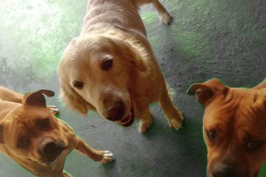

Nos gusta rastrear el suelo, trabajamos con el olfato para detectar residuos humanos atrapados en donde sea, trabajamos en equipo jamás estamos sólos Flora la humana es parte de la banda.
Nos gusta jugar, el rastrillaje es muy divertido porque encontramos tesoros, creamos lazos amistosos y ayudamos a los humanos a gestionar los residuos.
